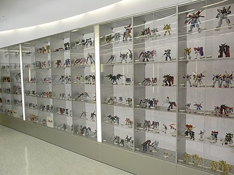
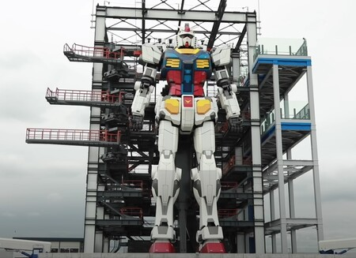

Los Gunplas o Modelos Gundam, son una serie de figuras plasticas producidas por Bandai. Estas reproducen a escala los robots, vehiculos y personajes de la serie Gundam.
Estos modelos se popularizaron entre los fanticos del anime y del modelismo. Su popularidad aumento en la epoca de los 1990 en países asiaticos, y en todo el mundo en los años 2000 gracias a la comercialización del manga y series de televisión.
El termino de Gunplas nace de "Gundam Plastic Model", este hace referencia a la acción de armar los modelos mas que delmodelo en si.
Los modelos Gundam estan clasificados en escalas y grados, los principales son los siguientes:
El 19 de diciembre de 2020 se abrio al publico en Tokyo Japon un modelo del Gundam RX-78F00 de escala 1:1, este llega a medir casi 20 metros de altura y pesa 25 toneladas. Dicho modelo es articulable y es capaz de realizar movimientos basicos. Al rededor del robot hay una plataforma de andamios desde la cual es posible ver el modelo más de cerca.
El modelo cuenta con niebla artificial y música para darle dramatismo a los movimientos del robot, el cual se mueve y cambia de pose cada media hora, ademas, cuenta con iluminación para las actuaciones nocturnas.
| Foto | Nombre | Precio |
|---|---|---|
| Gundam HG Aerial | $15 | |
| Gundam MG Barbatos | $30 | |
| Gundam PG Unicorn | $50 |